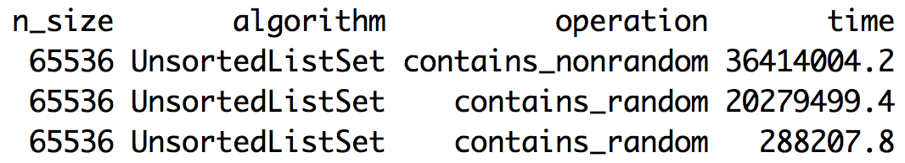
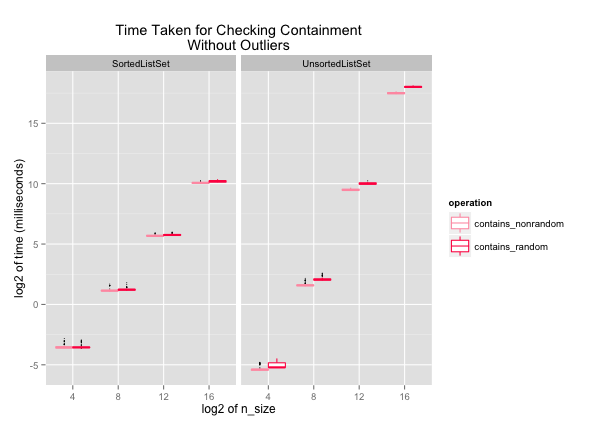
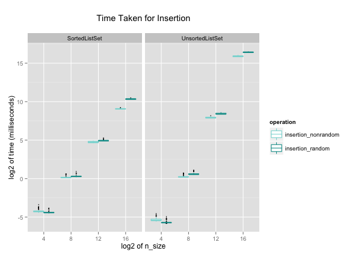

Here, I implemented two different set algorithms in Python, sorted list and unsorted list. I also compared their performances for inserting and searching a value in a set. The link to my code on GitHub is here. This is the first part of 2-part series. In the next blog entry, I will write about balanced and unbalanced trees, and their performances.
Algorithms
The two algorithms I compared are sorted list and unsorted list. These are the steps I took for my project.
With a set algorithm, for each n = 2^5, 2^9, 2^13, 2^17:
1. Create a set S1, and time the following:
- a. Insert each even number in range(0, N) in order into a set S1.
- b. Check whether S1 contains each value in range(0, N).
2. Create a list of N random numbers, and a new set S2. Time the following:
- a. Insert the first N/2 random numbers into S2.
- b. Check whether S2 contains each random number.
In summary, I tested insertion and containment check for N sizes of 2^4, 2^8, 2^12, and 2^16, in incremental and random orders.
Sorted List
When a sorted list is initialized, it creates an empty list:
class SortedListSet(object):
def __init__(self):
self.values = []
For sorting, I used binary search algorithm for finding the index of the value when inserting and checking containment. The binary search algorithm returns the index of the value:
def binary_search(self, value, l, start, end):
middle = (start + end)/2
# If this l is empty, 'start'
# and 'end' will be the same.
if end == start:
return middle
elif l[middle] == value:
return middle
# We don't need to consider middle anymore
# because we ruled it out above.
# So we recurse with middle +/- 1.
# Here, we go with middle + 1.
elif l[middle] < value:
return self.binary_search(value, l, middle + 1, end)
elif l[middle] > value:
return self.binary_search(value, l, start, middle)
SortedListSet inserts the value at the correct index that binary_search returned, with Python's built-in function, insert. Containment check returns True or False depending on whether the value at the index matches the queuried number:
def insert(self, value):
index = self.binary_search(value, self.values, 0, len(self.values))
# Index cannot be larger than the len(self.values)
if index == len(self.values) or value != self.values[index]:
# Use Python's built-in function, insert.
self.values.insert(index, value)
def contains(self, value):
index = self.binary_search(value, self.values, 0, len(self.values))
return index < len(self.values) and value == self.values[index]
Insertion with sorted list algorithm has O(n). This would be when the inserting needs to occur at the first of the list, and all the items in the list are scooted to the right. The big-O of containment check is O(log2(n)) thanks to binary search.
Unsorted List
The code for unsorted list is simple. When the UnsortedListSet is initialized, it creates an empty list:
class UnsortedListSet(object):
def __init__(self):
self.values = []
For insertion and containment check, the algorithm checks one number at a time from index of zero to the end of the list:
def insert(self, value):
if not self.contains(value):
self.values.append(value)
def contains(self, value):
for x in self.values:
if x == value:
return True
return False
The big-O of insertion and containment check for unsorted list are both O(n).
Visualizing Performance
I collected 100 data points of each set implementation. I used R and ggplot2 for visualizing the data. The plot of the data on a log2 x-scale and y-scale looks like below:

While it appears that I collected each operation data at a different n_size, each group of four boxes actually belongs to one n_size. ggplot2 automatically spreads the box plots so that it's easier to see the individual boxes. I used box plot because it accentuates the subtle differences between operations with random and non-random ordered numbers, rather than overlapping them like a point plot would. Let's dive into the data a little more, and look at insertion and containment check separately.
Containment Check: non-random and random
In the above plot in the UnsortedListSet plot, you can see that there are two extreme outliers that took about 2^7 times longer for completing the containment-check operation. It is odd that only two points are much slower than the other data points. I think it could have been either the order of the queries tested the worst case performance, or something interrupted the operations somehow. When sorted in decreasing order, you can see that these outliers are quite large compared to the third largest value.
Either way, I decided to exclude the two outliers so that I can look at the data more fairly.
The big-O of containment-check would be O(log2(n)) for SortedListSet, and O(n) for UnsortedListSet.
It is clear that the time taken for containment check in SortedListSets increases at a slower rate than in UnsortedListSets, as expected. It is interesting that the SortedListSet starts to significantly outperform UnsortedListSet at n > 2^8. More interestingly, SortedListSet is in fact slower than UnsortedListSet when n size is small. The overhead cost of sorting via binary search must be larger than the benefit of checking containment in a sorted list.
The difference between checking containment of numbers in non-random and random orders into a SortedListSet almost does not exist. This is probably because every time a new number is added to the sorted list, the algorithm does binary search to find the correct index for the number. For a SortedListSet, whether the input numbers are in random or non-random order does not make a difference in the resulting list.
This, however, is not true for a UnsortedListSet. If the input numbers are given in a random order, the resulting list will have numbers in a random order. Checking containment in a randomly ordered list takes longer than in a ordered list, as you can see in the plot.
Insertion: non-random and random
The big-O of insertion would be O(n) for SortedListSet, as it uses Python's built-in operation, and it would be O(n) for UnsortedListSet.
Like containment check, the time it takes to insert numbers increases at a slower rate in SortedListSet. Again, SortedListSet actually takes longer insertion time for n < 2^8, and starts to outperform UnsortedListSet for n > 2^8.
Unlike containment check, the difference between inserting numbers in random and non-random orders into a SortedListSet exists. This is because when inserting numbers in order, insertion is more like Python's 'append', because the new number is always added to the last of the list. In other words, none of the items in the list is moved. Meanwhile, insertion in UnsortedListSet follows a similar trend as containment check in UnsortedListSet.
One thing I cannot explain about insertion is how inserting randomly ordered numbers take shorter time than ordered numbers at n = 2^4. It very well could be noise in data, or an interesting trend.
Conclusion and Closing Thoughts
I wanted to compare the real world performace to theoretical big-O in the plots, but I had difficult time representing the big-O. For example, I understand that insertion for SortedListSet is O(n) but that doesn't mean it should be plotted as y = x. What would be the coefficient? What about the intercept?
I'm also looking forward to implementing and visualizing TreeSets. I wrote a script for an UnbalancedTreeSet, but for n > 2^8, it would reach the recursion limit and crash. Currently, the algorithm is implemented recursively, and I'm thinking about how to do it iteratively.